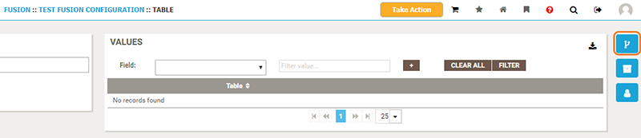
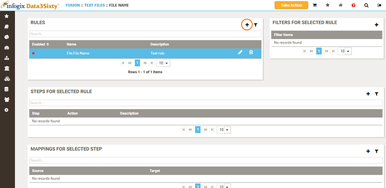
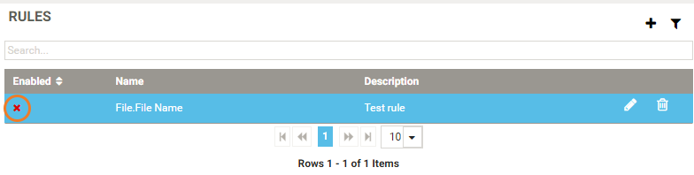
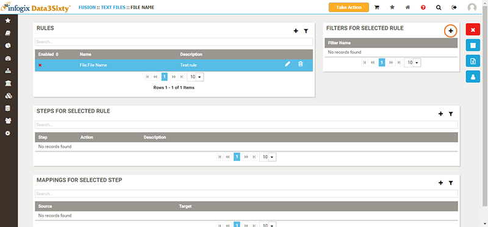
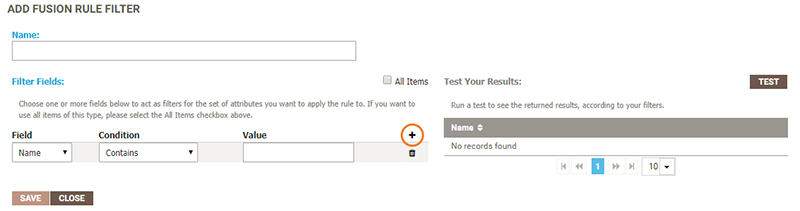
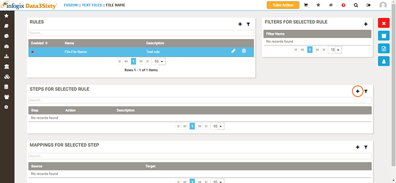

|
|
Creating a Fusion rule
Once you have created a Fusion type and a Fusion configuration, you can apply rules to determine what to do with the information that is brought into the system.
In general, Fusion Rules are used to create Glossary items from Fusion items. They are also frequently used to relate a Glossary item back to the Fusion item.
The term Promote is used to describe taking information from Fusion and applying it elsewhere in the system. Other possible actions are finding information then using it in a next step, creating lineage, and updating items.
There are four basic steps to create a Fusion rule:
- Create the rule.
- Define a filter for the rule.
- Build the steps of the rule.
- Define any mappings for each step.
Creating the rule
- From the Administration menu on the left of the screen, select Integration > Fusion.
- From the Configurations panel, double-click the configuration for which you want to create the rule.
- Click the Fusion Rules button on the right of the screen:

- To create a new rule, click the Add button in the top right corner of the Rules panel.

- In the Add Fusion Rule panel, from the Promote list, select the Fusion attribute type that the rule will apply to.
- Add a Description to explain the function of the rule.
- The Enabled? option determines whether or not the rule is enabled. If you select Enabled?, the rule will run next time the background job for Fusion rules run. When enabled, a green checkmark displays next to the rule. If you do not select Enabled?, the rule will not be executed when the background job runs. When the rule is disabled, you will see a red "X" next to the rule.

Tip: It is recommended that you do not select Enabled? until you have completed the configuration of your rule.
Defining a filter
Each rule must have an associated filter. This determines which items of the Fusion attribute will get promoted. In most cases not all technical data is necessary at the business level. Defining the filter allows you to specify which items to promote.
- Highlight the rule in the Rules panel.
- To add a filter to the selected rule, click the Add button in the top right corner of the Filters for Selected Rule panel:

- In the Add Fusion Rule Filter panel, enter a descriptive Name for the filter.
- Specify your filter conditions in the Filter Fields section e.g.
Name Starts With V:- Field - Select a Fusion attribute detail e.g.
Name. - Condition - Select a condition to apply to the Fusion attribute that you selected in the Field list e.g.
Starts With. - Value - Specify a value to apply to the Condition that you selected e.g.
V.
- Field - Select a Fusion attribute detail e.g.
- If you want to add additional filter criteria, click the Add button in the filter criteria grid:

The condition between fields is
AND. So, for instance, if you have two filters:Data Type = StringDescription Contains "Accounting"
The applied filter would read:
"Promote all Fusion attribute items where the description contains the word "Accounting" AND it is a string field".
- Test your results by clicking the Test button. Ensure that the Fusion attribute items that you want to promote are returned.
- Select All Items if you want to promote all Fusion attribute items.
Building the steps
Before you can build the steps of the rule, you need to understand the end goal, for example it may be to create artifacts, relate artifacts back to the Fusion item, find information or update information.
- Highlight the rule in the Rules panel.
- A rule can have multiple steps, with each step building on the previous. To add a new step to your rule, click the Add button in the top right corner of the Steps for Selected Rule panel:

-
In the Add Rule Step panel, type a Description and select an Action:
- Promote - Creates assets from Fusion items. You can create an artifact, a model or a reference list from a Fusion attribute.
- Find - Look for an existing item in the glossary based on metadata contained on your Fusion attribute, then use the finding in subsequent steps.
- Find via Relationship - Lookup an existing item in the glossary based on a relationship it has to another item.
- Relate - You can relate various objects together as part of a Fusion rule.
- Update - You can update an item.
Additional configuration fields will display depending on the Action that you select:
Promote
- Promotion Type - Select the asset type that the Fusion attribute will be promoted to. Choose from Artifact, Model or Reference.
- Promotion To - Once you have selected an asset type from the Promotion Type list, the Promotion To list will show all assets of the type selected. Select an item from the list, or type the first few characters to filter the list.
- Parent Search - If you select Artifact as the Promotion Type and the Promotion To is an Artifact with a parent relationship, then the Parent Search field will be displayed. Select the parent category.
- Promote Under - This field is displayed when you have selected an option from the Parent Search list, allowing you to select the parent. Depending on your selection in the Parent Search field, the list will be populated as follows:
- Direct - Select from a list of parent artifacts.
- Fusion Owner - Select the Fusion owner that will be the parent.
- Result From Step - Select from a list of previous rule steps. This is used in the case where a step with a Find action is used. A previous step could look for something and then based on what it finds, use that value as the parent in the current step.
If you selected the Promote action, there are a set of additional steps that you must complete to map a set of fields to promote, see Defining mappings for steps.
Find
- Search Type - Select the item type that is being searched for. Choose from:
- Fusion - Find Fusion items.
- Source Matching Field - Select the source field from a list of Fusion attribute detail fields on the selected Fusion attribute.
- Fusion Attribute Type - Select a Fusion attribute type e.g. File.File Name.
- Fusion Owner - Find a Fusion owner.
- Glossary - Find items in the glossary.
- Source Matching Field - Select the source field from a list of Fusion attribute detail fields on the selected Fusion attribute.
- Type - Select whether the item is an Artifact or a Model.
- Item - Select the Artifact or Model to look in.
- Target Matching Field - Select the field to match to the source field. The options displayed in this list depend on the selected Model or Artifact in the Item field.
- Result From Step - Find an item from a previous step.
- Result From Step - Select the step that you want to search.
- Find items parent? - Select this option to also find the parent from the previous step.
- Fusion - Find Fusion items.
Relate
- Relationship Type - Select the relationship type that you want to create.
- Subject Search Type - Select how to find the subject. Note that the option "self" is from the perspective of the Fusion attribute of the rule.
- Object Search Type - Select how to find the object.
Defining mappings for steps
If you selected the Promote action, there are a set of additional steps that you must complete to map a set of fields from the Fusion attribute to fields in the Glossary.
Tip: Mappings are defined for an individual step, they are not independent to the rule.
Tip: Before setting up any mappings understand the data types of the Fusion attribute detail fields as well as the artifact custom fields. The data types must be compatible when Fusion attribute detail fields are mapped to artifact custom fields.
- Highlight your new step in the Steps for Selected Rule panel.
- In the Mappings for Selected Step panel, click the Add button in the top right corner.
-
In the Add Fusion Rule Mapping panel, select a Source and a Target.
The Source represents a set of properties that are available on the Fusion attribute.
The Target represents properties that are available on the object you are promoting to.
For example, you could take data on a Bloomberg mnemonic (name, description, field ID, etc.) and promote it to a glossary called Vendor Dictionary. In this case, the Source would be the Bloomberg mnemonic.
Tip: If you type a value, it must match one of the model types that exists in your environment. The easiest way to see what values are available is to hover over the Models menu on the left side of the screen.
Tip: Depending on the circumstance, in general the fields promoted from Fusion should not be editable in the Glossary.
See also: Installing the Fusion agent